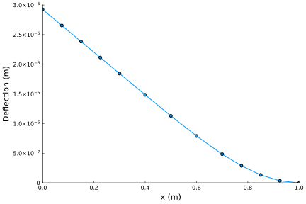
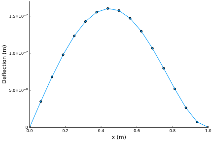
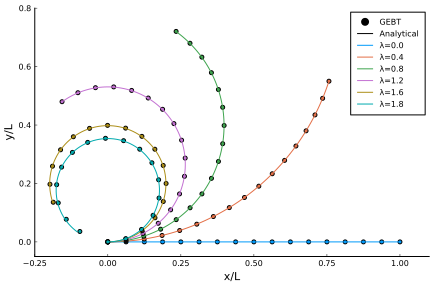

Examples
These examples show how to use the various analysis capabilities of GEBT.jl. Some of the examples also provide a verification/validation for the implementation of geometrically exact beam theory in GEBT.jl.
- Examples
- Linear Analysis of a Cantilever Subjected to a Uniform Distributed Load
- Linear Analysis of a Beam Under a Linear Distributed Load
- Nonlinear Analysis of a Cantilever Subjected to a Constant Moment
- Nonlinear Analysis of the Bending of a Curved Beam in 3D Space
- Nonlinear Time-Marching and Eigenvalue Analysis of a Beam Assembly
Linear Analysis of a Cantilever Subjected to a Uniform Distributed Load
using GEBT, LinearAlgebra
nelem = 12
# create points
n1 = n3 = div(nelem, 3)
n2 = nelem - n1 - n3
x1 = range(0, 0.3, length=n1+1)
x2 = range(0.3, 0.7, length=n2+1)
x3 = range(0.7, 1.0, length=n3+1)
x = vcat(x1, x2[2:end], x3[2:end])
y = zero(x)
z = zero(x)
points = [[x[i],y[i],z[i]] for i = 1:length(x)]
# index of endpoints for each beam element
start = 1:nelem
stop = 2:nelem+1
# create compliance matrix for each beam element
compliance = fill(Diagonal([2.93944738387698E-10, 0, 0, 4.69246721094557E-08, 6.79584e-8, 1.37068861370898E-09]), nelem)
# create assembly
assembly = Assembly(points, start, stop, compliance=compliance)
# set prescribed conditions (fixed right endpoint)
prescribed_conditions = Dict(
nelem+1 => PrescribedConditions(ux=0, uy=0, uz=0, theta_x=0, theta_y=0, theta_z=0)
)
# create distributed load
distributed_loads = Dict()
for ielem in n1+1:n1+n2
distributed_loads[ielem] = DistributedLoads(assembly, ielem; fz = (s) -> 1000)
end
system, converged = static_analysis(assembly, prescribed_conditions=prescribed_conditions,
distributed_loads=distributed_loads, linear=true)
state = AssemblyState(system, assembly, prescribed_conditions=prescribed_conditions)
Linear Analysis of a Beam Under a Linear Distributed Load
using GEBT, LinearAlgebra
nelem = 16
# create points
x = range(0, 1, length=nelem+1)
y = zero(x)
z = zero(x)
points = [[x[i],y[i],z[i]] for i = 1:length(x)]
# index of endpoints for each beam element
start = 1:nelem
stop = 2:nelem+1
# create compliance matrix for each beam element
compliance = fill(Diagonal([2.93944738387698E-10, 0, 0, 4.69246721094557E-08, 6.79584e-8, 1.37068861370898E-09]), nelem)
# create assembly
assembly = Assembly(points, start, stop, compliance=compliance)
# set prescribed conditions
prescribed_conditions = Dict(
# simply supported left endpoint
1 => PrescribedConditions(uz=0),
# clamped right endpoint
nelem+1 => PrescribedConditions(ux=0, uy=0, uz=0, theta_x=0, theta_y=0, theta_z=0)
)
# create distributed load
distributed_loads = Dict()
for i = 1:nelem
distributed_loads[i] = DistributedLoads(assembly, i; s1=x[i],
s2=x[i+1], fz = (s) -> 1000*s)
end
system, converged = static_analysis(assembly, prescribed_conditions=prescribed_conditions,
distributed_loads=distributed_loads, linear=true)
state = AssemblyState(system, assembly, prescribed_conditions=prescribed_conditions)
Nonlinear Analysis of a Cantilever Subjected to a Constant Moment
This problem is a common benchmark problem for the geometrically nonlinear analysis of beams and has an analytical solution.
using GEBT, LinearAlgebra
L = 12 # inches
h = w = 1 # inches
E = 30e6 # lb/in^4 Young's Modulus
A = h*w
Iyy = w*h^3/12
Izz = w^3*h/12
# bending moment (applied at end)
# note that solutions for λ > 1.8 do not converge
λ = [0.0, 0.4, 0.8, 1.2, 1.6, 1.8]
m = pi*E*Iyy/L
M = λ*m
# create points
nelem = 16
x = range(0, L, length=nelem+1)
y = zero(x)
z = zero(x)
points = [[x[i],y[i],z[i]] for i = 1:length(x)]
# index of endpoints of each beam element
start = 1:nelem
stop = 2:nelem+1
# compliance matrix for each beam element
compliance = fill(Diagonal([1/(E*A), 0, 0, 0, 1/(E*Iyy), 1/(E*Izz)]), nelem)
# create assembly of interconnected nonlinear beams
assembly = Assembly(points, start, stop, compliance=compliance)
# pre-initialize system storage
static = true
keep_points = [1, nelem+1] # points that we request are included in the system of equations
system = System(assembly, keep_points, static)
# run an analysis for each prescribed bending moment
states = Vector{AssemblyState{Float64}}(undef, length(M))
for i = 1:length(M)
# create dictionary of prescribed conditions
prescribed_conditions = Dict(
# fixed left side
1 => PrescribedConditions(ux=0, uy=0, uz=0, theta_x=0, theta_y=0, theta_z=0),
# moment on right side
nelem+1 => PrescribedConditions(Mz = M[i])
)
static_analysis!(system, assembly, prescribed_conditions=prescribed_conditions)
states[i] = AssemblyState(system, assembly, prescribed_conditions=prescribed_conditions)
end
Nonlinear Analysis of the Bending of a Curved Beam in 3D Space
This problem is also a common benchmark problem for the geometrically exact bending of nonlinear beams, but does not have an analytical solution.
using GEBT, LinearAlgebra
# problem constants
R = 100
L = R*pi/4 # inches
h = w = 1 # inches
E = 1e7 # psi Young's Modulus
ν = 0.0
G = E/(2*(1+ν))
# beam starting point and curvature
r = [0, 0, 0]
frame = [0 -1 0; 1 0 0; 0 0 1]
k = [0, 0, -1/R]
# cross section properties
A = h*w
Ay = A
Az = A
Iyy = w*h^3/12
Izz = w^3*h/12
J = Iyy + Izz
# discretize the beam
nelem = 16
ΔL, xp, xm, Cab = discretize_beam(L, r, nelem, Cab=frame, k = k)
# force
P = 600 # lbs
# index of left and right endpoints of each beam element
pt1 = 1:nelem
pt2 = 2:nelem+1
# compliance matrix for each beam element
compliance = fill(Diagonal([1/(E*A), 1/(G*Ay), 1/(G*Az), 1/(G*J), 1/(E*Iyy), 1/(E*Izz)]), nelem)
# create assembly of interconnected nonlinear beams
assembly = Assembly(xp, pt1, pt2, compliance=compliance, frames=Cab,
lengths=ΔL, midpoints=xm)
# create dictionary of prescribed conditions
prescribed_conditions = Dict(
# fixed left endpoint
1 => PrescribedConditions(ux=0, uy=0, uz=0, theta_x=0, theta_y=0, theta_z=0),
# force on right endpoint
nelem+1 => PrescribedConditions(Fz=P)
)
system, converged = static_analysis(assembly, prescribed_conditions=prescribed_conditions)
state = AssemblyState(system, assembly, prescribed_conditions=prescribed_conditions)
println("Tip Displacement: ", state.points[end].u)
println("Tip Displacement (Bathe and Bolourch): [-13.4, -23.5, 53.4]")
# write a file that can be visualized in ParaView
write_vtk("curved", assembly, state)Tip Displacement: [-13.577383726758567, -23.545303336988034, 53.458007575489276] Tip Displacement (Bathe and Bolourch): [-13.4, -23.5, 53.4]

The calculated tip displacements match those found by Bathe and Bolourch closely, thus verifying our GEBT implementation.
Nonlinear Time-Marching and Eigenvalue Analysis of a Beam Assembly
using GEBT, LinearAlgebra
nelem = 20
nelem_b1 = div(nelem, 2)
nelem_b2 = div(nelem, 2)
# beam 1
L_b1 = sqrt(1 + 0.5^2)
r_b1 = [0, -0.5, 0]
s_b1, c_b1 = 0.5/L_b1, 1/L_b1
frame_b1 = [c_b1 -s_b1 0; s_b1 c_b1 0; 0 0 1]
lengths_b1, xp_b1, xm_b1, Cab_b1 = discretize_beam(L_b1, r_b1, nelem_b1, Cab=frame_b1)
# beam 2
L_b2 = sqrt(1 + 0.5^2)
r_b2 = [1, 0.0, 0]
s_b2, c_b2 = 0.5/L_b2, -1/L_b2
frame_b2 = [c_b2 -s_b2 0; s_b2 c_b2 0; 0 0 1]
lengths_b2, xp_b2, xm_b2, Cab_b2 = discretize_beam(L_b2, r_b2, nelem_b2, Cab=frame_b2)
# combine elements and points into one array
points = vcat(xp_b1, xp_b2[2:end])
start = 1:nelem_b1 + nelem_b2
stop = 2:nelem_b1 + nelem_b2 + 1
lengths = vcat(lengths_b1, lengths_b2)
midpoints = vcat(xm_b1, xm_b2)
Cab = vcat(Cab_b1, Cab_b2)
# cross-sections for both beams
w = 0.1 # meters
h = 0.05 # meters
E = 70e9 # Pa
ν = 0.35
ρ = 2700 # kg/m^3
# shear correction factors
AR = w/h
ky = 6/5 + (ν/(1+ν))^2*AR^-4*(1/5 - 18/(AR*pi^5)*sum([tanh(m*pi*AR)/m^5 for m = 1:1000]))
kz = 6/5 + (ν/(1+ν))^2*AR^4*(1/5 - 18/(pi^5)*sum([tanh(n*pi*AR^-1)/n^5 for n = 1:1000]))
A = h*w
Ay = A/ky
Az = A/kz
Iyy = w*h^3/12
Izz = w^3*h/12
J = Iyy + Izz
G = E/(2*(1+ν))
compliance = fill(Diagonal([1/(E*A), 1/(G*Ay), 1/(G*Az), 1/(G*J), 1/(E*Iyy), 1/(E*Izz)]), nelem)
minv = fill(Diagonal([ρ*A, ρ*A, ρ*A, ρ*J, ρ*Iyy, ρ*Izz])^-1, nelem)
# create assembly
assembly = Assembly(points, start, stop, compliance=compliance, minv=minv,
frames=Cab, lengths=lengths, midpoints=midpoints)
# time
dt = 0.001
t = 0:dt:0.5
nstep = length(t)
# create dictionary of prescribed conditions
prescribed_conditions = Dict(
# fixed endpoint on beam 1
1 => PrescribedConditions(dt, nstep=nstep, ux=0, uy=0, uz=0, theta_x=0, theta_y=0, theta_z=0),
# fixed endpoint on beam 2
nelem+1 => PrescribedConditions(dt, nstep=nstep, ux=0, uy=0, uz=0, theta_x=0, theta_y=0, theta_z=0),
# force applied on connected endpoint
nelem_b1+1 => PrescribedConditions(dt, nstep=nstep, Fz=(t)->1e5*sin(20*t))
)
system, history, converged = time_domain_analysis(assembly, dt,
prescribed_conditions=prescribed_conditions, nstep = nstep)
system, λ, V, converged = eigenvalue_analysis(assembly,
prescribed_conditions=prescribed_conditions, nstep = nstep, nev = 50)
Us = left_eigenvectors(system, λ, V)